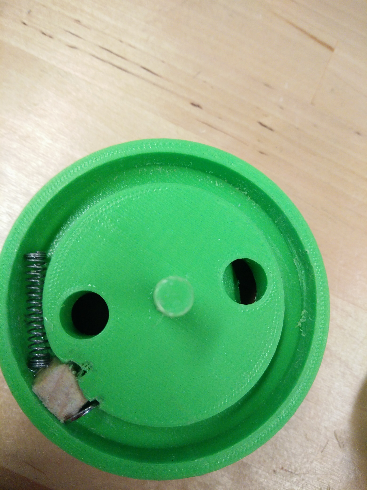
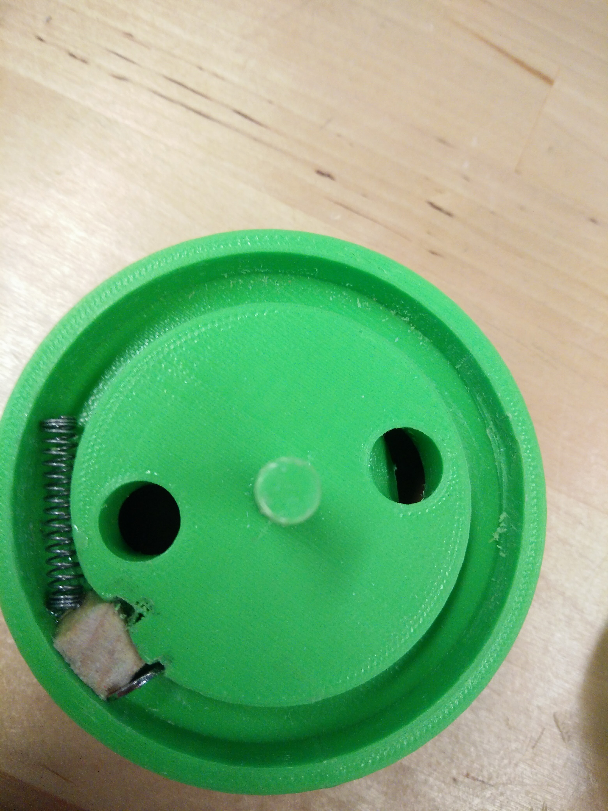

↬ I am a student at the University of Waterloo currently working towards my bachelor of Engineering in Systems
Design Engineering.
↬ I love to play sports! I have played on many intramural teams at UW including Hockey, Soccer, Volleyball, and Ultimate Frisbee.
↬ I love new experiences and being able to learn new, relevant, and applicable skills.
↬ I love outdoor activities and think that there is no where better to be than on the water.
↬ I am a self-taught guitar player and mostly play any songs I'm enjoying at the time.
↬ I love listening to music and am always trying to explore new genres.
↬ A bottle that is meant to reduce alcohol consumption and increase water intake when drinking at social events.
↬ The bottle has two compartments, one for alcohol and one for water.
↬ The lid has to be held on the alcohol compartment or else it will spin back to the water compartment.
↬ Our design team started off with defining our problem space, creating personas, and brainstorming ideas.
↬ Once we had our bottle idea, we followed through an iterative design process by first creating a low-fidelity prototype then conducted user testing.
↬ Adjustments were made and this process was replicated for a medium-fidelity prototype.
↬ The high fidelity prototype was then designed in Solidworks by myself and another team member, and printed using a 3D printer.
↬ Final user testing was finally conducted.
 

↬ Recreation of Guitar Hero using two breadboards and an Arduino Uno.
↬ A PHP blog platform with a MySQL database.
↬ A 3D Unity horror game inspired by Slenderman.
↬ Text-based adventure game written in PHP with a MySQL database.
↬ Collaborated with a small team dedicated to developing chatbots on Google Dialogflow and Amazon Alexa in Node.js.
↬ Actively sought out work and often created new tasks based on what needed to be done.
↬ Pitched new feature ideas and created prototypes, some of which became fully functioning features.
↬ Learned and executed DevOps practices using Gitlab CI/CD, and Terraform to manage AWS.
↬ Implemented new features and designs for a web application using AngularJS, HTML and CSS.
↬ Worked directly with a designer and other developers to optimize the user experience of the UI.
↬ Created suggestions and recommendations for bettering the application, and followed through with developing them.
↬ Developed projects from scratch, and worked on pre-existing projects, both on the backend and frontend, all in an agile work environment.
↬ Worked solely with new languages, libraries, and frameworks learned on the job, while managing to meet deadlines with constantly changing projects from sprint to sprint.